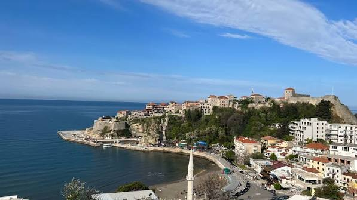
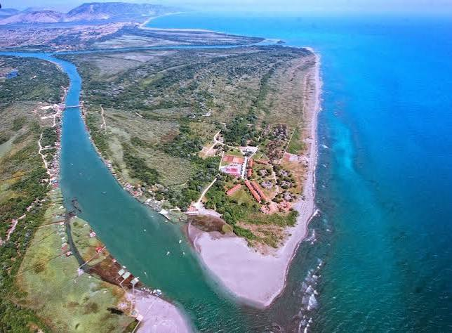
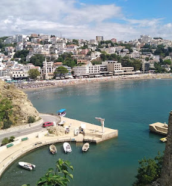
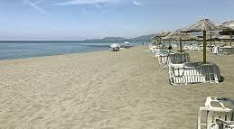

Plaže
Ulcinj je posebno poznat po svojim dugim peščanim plažama. Jedna od najpoznatijih je Velika plaža, koja je veoma dugačka i popularna među turistima.
- Velika plaza
- Mala plaza
- Valdanos
- Zenska plaza

Crna Gora - more, plaze
Ulcinj je jedan od najpoznatijih gradova na primorju Crne Gore. Nalazi se na jugu Crne Gore, blizu granice sa Albanijom. Poznat je po lepim plažama, starom gradu i velikom broju turista tokom letnje sezone.
Ulcinj bih voleo da posetim zbog mora, lepog vremena i zanimljivih mesta koja mogu da se obidju. Grad ima posebnu atmosferu i veoma lepo izgleda tokom leta.

Ulcinj je posebno poznat po svojim dugim peščanim plažama. Jedna od najpoznatijih je Velika plaža, koja je veoma dugačka i popularna među turistima.
| Mesto | Zašto bih ga posetio |
|---|---|
| Velika plaza | Zbog mora i peska |
| Stari grad | Zbog istorije i pogleda |
| Valdanos | Zbog prirode i mirnije atmosfere |


